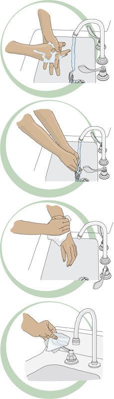

Hand Washing
1. Prepare hands and arms up to elbows ready for washing.
2. Remove any jewellery from hands/wrists.
3. Turn water on and mix to appropriate temperature.
4. Wet hands under running water.
5. Apply soap – preferably liquid soap from a dispenser.
6. Work lather over hands and wrists working up to elbows. Soap well in between fingers – minimum 1 minute
7. Scrub nails with nailbrush.
8. Rinse hands and arms thoroughly under running water from hands down to elbows.
9. Hold forearms upright and allow to drip dry.
10. Dry each hand on separate disposable towels.Turn tap off by using paper towel prior to discarding it into pedal bin.